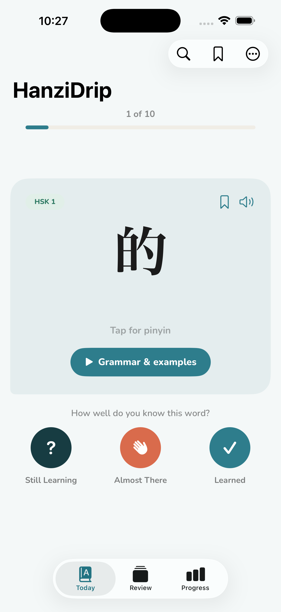
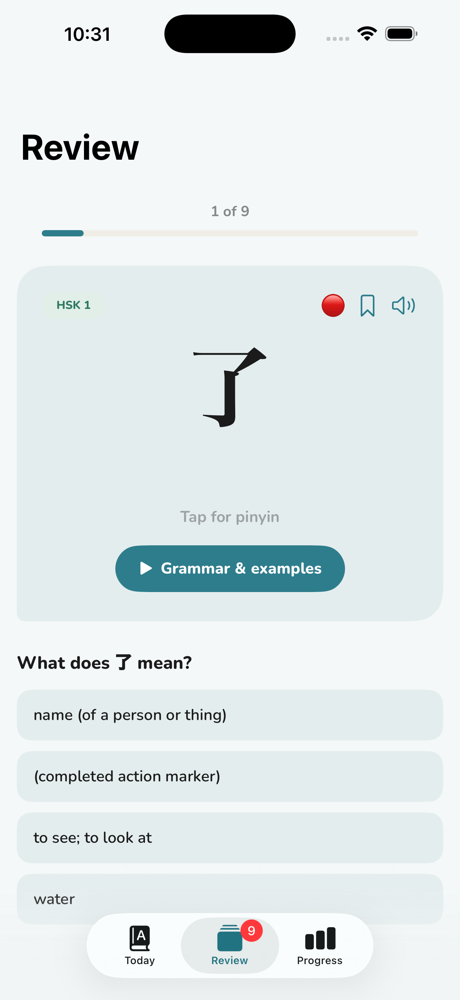
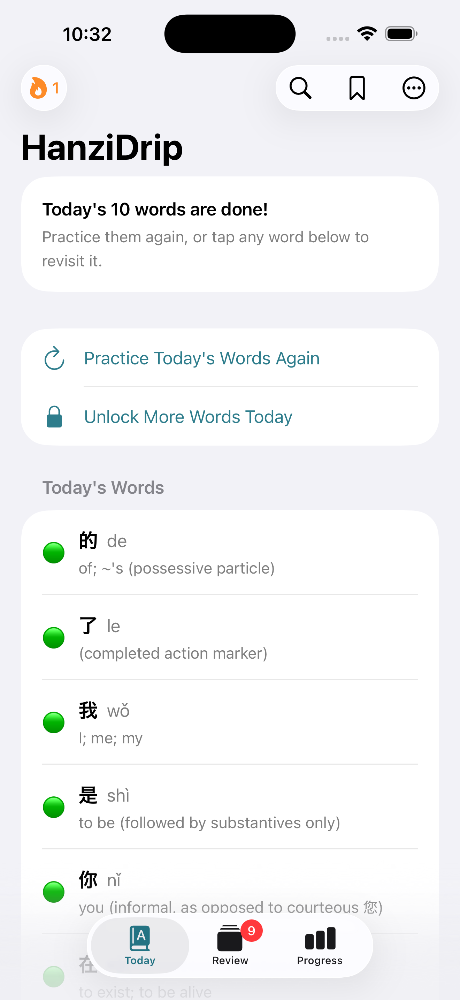
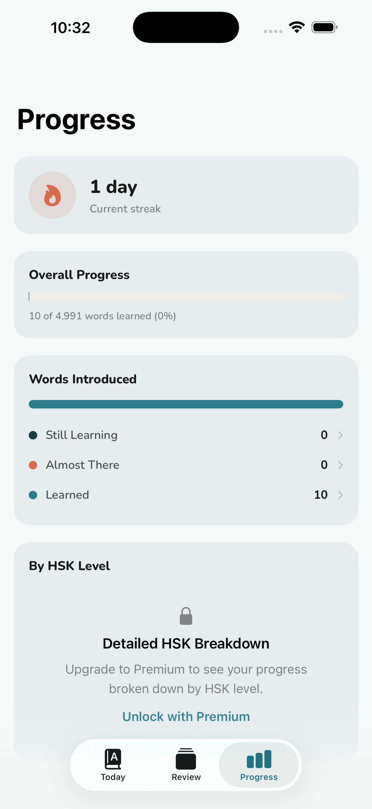

All 4,991 official HSK 1–6 words. A few at a time, every day.
HanziDrip is a focused daily-vocabulary app for HSK exam takers and serious Chinese learners — no curated subset, no ads, no accounts. Just the full word list, taught properly.
Download on the App Store
HSK 1-2 free forever
Daily habit, real progress
- A handful of new words a day, never an overwhelming deck — tap through Still Learning, Almost There, or Learned as you go
- Review mode brings words back with quick multiple-choice self-tests, timed before you'd forget them
- Track your streak and see exactly where you stand across all six HSK levels
- Home Screen and Lock Screen widgets put today's word one glance away
Built for serious HSK study
- Every one of the 4,991 words comes with pinyin, definitions, grammar explanations, usage notes, common mistakes, and example sentences — cross-checked against known CC-CEDICT dictionary errors that trip up other Chinese-learning apps
- Tap any word to hear it spoken instantly, with on-device text-to-speech — no internet required
- Grammar notes written specifically for Thai speakers — direct comparisons to Thai word order, classifiers, and tone — complete for HSK 1-5, with HSK 6 rolling out level by level
- Browse or search all 4,991 words anytime, and bookmark anything you want to revisit
Private by design
- No account, no sign-up, no email — just open the app and start
- No ads, no third-party analytics, no tracking SDKs
- Your progress syncs privately across your own devices through your own iCloud account — it never touches a server we run
Free to start, Premium when you're ready
HSK 1 and HSK 2 — the first ~300 words most beginners need — are free, forever. Premium unlocks HSK 3-6, unlimited review, and a detailed progress breakdown by level.
See it in action



